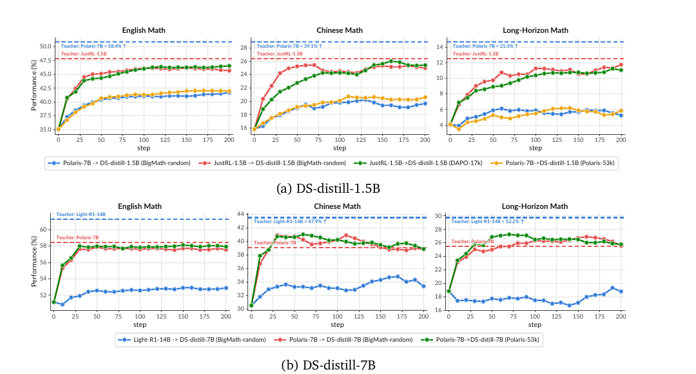
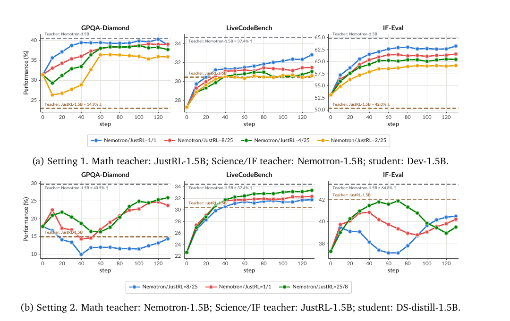

Every Coin Has Two Sides: The Dual Nature of Generalization in On-Policy Distillation
TL;DR
- A controlled study (arXiv 2608.16647; Zhaoyi Li, Deyang Kong, et al.) that varies one OPD generalization factor at a time — training-problem difficulty, evaluation language, reasoning horizon, task domain, and teacher mixture — instead of reporting a single in-domain number. Headline: OPD transfers the teacher's reasoning behavior, not its answers. Training difficulty barely matters, and even problems the teacher never solves provide useful supervision.
- What actually gates transfer is model origin: teacher–student pairs sharing the same initialization checkpoint ("same-origin") carry the teacher's level across languages, longer-horizon math, and even other domains; cross-origin teachers — even strictly stronger ones — mostly fit the trained distribution.
- Consequence for multi-teacher OPD (MOPD): because a same-origin teacher's influence is not confined to its assigned domain, routing prompts to domain experts doesn't isolate their effects. Changing the mixture ratio produces a seesaw — the student drifts toward whichever teacher gets the larger share, across all domains, sometimes dropping a benchmark ~5% early in training.
Why this matters
OPD has quietly become the workhorse of post-training: sample trajectories from the student's own policy, supervise them with the teacher's per-token distribution, and you avoid the exposure bias of offline distillation. But almost everything we believe about how to use it — curate hard problems, route prompts to domain-expert teachers, prefer the strongest available teacher — is folklore extrapolated from single-domain, near-distribution evals. This paper tests each piece of folklore in isolation, and two of the three fail.
The failures are practically expensive. If you're consolidating specialists into one model (the standard endgame of an RL-specialist pipeline — see SocialRL, distilled today in this tracker, which does exactly this), the seesaw result says your domain-routing scheme is not doing what you think: the mixture ratio, not the routing, decides the student's capability profile. And if you're choosing a teacher, "strongest available" is the wrong criterion — a weaker teacher grown from your student's own checkpoint transfers more, more stably.
For this tracker's distillation thread, this is the "what actually transfers" companion to the mechanics-focused papers (SimpleOPD on cross-tokenizer alignment, W2S-OPD on synthesizing teachers): before optimizing how to compute the KL, it's worth knowing which teacher–student pairs the KL can help at all.
The core idea
OPD minimizes the per-token reverse KL from student to teacher on trajectories the student itself samples. With student \(\pi_\theta\), teacher \(\pi_\phi\), prompt \(x\sim\mathcal{D}\), student rollout \(y\sim\pi_\theta(\cdot\mid x)\) and prefix \(h_t\):
In practice the reverse KL is estimated with a sampled-token \(k_1\) approximation, giving a policy-gradient form whose "advantage" is just the teacher–student log-probability gap on the token actually sampled (sg is stop-gradient):
Nothing in either equation mentions task correctness — the supervision signal is purely distributional alignment on student-visited states. That's the paper's lens for both headline results: (a) it explains why teacher pass-rate on training problems is nearly irrelevant (a wrong-answer trajectory still elicits informative teacher token distributions), and (b) it predicts that transfer should depend on how compatible the teacher's policy is with the student's — which is what "origin" operationalizes.
Origin, precisely. Two models are same-origin when they share the same concrete initialization checkpoint and one or both were post-trained from it. E.g., DeepSeek-R1-Distill-Qwen-1.5B is a lineage root; JustRL-1.5B (math RL) and Nemotron-Research-Reasoning-Qwen-1.5B (prolonged multi-domain RL) both descend from it, so either can serve as a same-origin teacher for it.
Evaluation uses \(\operatorname{Avg@}K=\frac{1}{|\mathcal{D}|}\sum_{x}\frac{1}{K}\sum_{k}\mathcal{V}(x,y^{(k)})\) — mean verified accuracy over \(K\) samples per problem — with a sliding-window smoothing \(\widetilde{s}_t\) over training steps for the curves.
How it works
The design is a grid of controlled single-factor experiments over teachers (Qwen3-32B, Polaris-4B/7B, JustRL-1.5B, Nemotron-1.5B, Light-R1-7B/14B), students (DS-distill-1.5B/7B/14B, Qwen3-8B-SFT, Qwen3-4B, Dev-1.5B), and four domains (math, code, science, instruction following), evaluated on AMC2023, MATH500, AIME2025/2026, BeyondAIME, OlymMATH-Hard, plus Chinese math, long-horizon math, LiveCodeBench, GPQA-Diamond, and IF-Eval.
# The paper's experimental logic, as a loop
for factor in [difficulty, language, horizon, domain, teacher-mixture]:
fix everything else (teacher, student, data source, steps)
vary only `factor`:
difficulty : BigMath subsets binned by TEACHER pass-rate (=1 easy, =0 hard, random)
language : train English math only -> eval Chinese math
horizon : train short-horizon -> eval long-horizon math
domain : train math only -> eval code / science / IF (and reverse)
mixture : two teachers, sweep prompt-allocation ratio (e.g. 1/1 ... 2/25)
run OPD ~200 steps, track Avg@K per benchmark
compare same-origin vs cross-origin teacher for the SAME student
# Mechanism probe: Top-K (K=16) token-overlap ratio between teacher and student
# along training — same-origin pairs start and stay higher.
Difficulty (doesn't matter). Training on teacher-pass-rate-1 (easy), pass-rate-0 (never solved), or random BigMath subsets converges to nearly identical final accuracy across all teacher–student pairs. The one filtering that does help is student-side: dynamic sampling that discards only problems the student already solves (keeping pass-rate \(\in[0,1)\)) gives the best average across six math benchmarks.
Origin (matters a lot).

Figure 2 from the paper (rendered from the PDF): trained only on English short-horizon math, the same-origin pairs (JustRL-1.5B→DS-distill-1.5B; Polaris-7B→DS-distill-7B) climb to their teacher's dashed line on Chinese and long-horizon math too, while cross-origin pairs — including the stronger Polaris-7B (58.4% English math) teaching DS-distill-1.5B, and Light-R1-14B teaching DS-distill-7B — plateau well below.
The proposed reading: origin proxies for policy compatibility, so "same-origin pairs can align as a whole and carry that alignment across distributions." The Top-K(16) overlap-ratio curves back this correlationally — same-origin pairs share far more of their token-level top-K mass throughout training. Using the teacher's own RL prompts (Polaris-53k, DAPO-17k) makes no substantial difference, reinforcing that the data is not the active ingredient.
The MOPD seesaw.

Figure 4 from the paper (rendered from the PDF): in Setting 1, raising the math teacher JustRL-1.5B's prompt share drags GPQA-Diamond, LiveCodeBench, and IF-Eval down toward JustRL's lower baselines — on GPQA the pull is strong enough that accuracy drops ~5% early in training. In Setting 2, with teachers' roles swapped, the same benchmarks rise as Nemotron's share grows.
The training curves show a literal tug-of-war: the MOPD student first tracks the JustRL-only curve, then drifts toward the Nemotron-only curve. The conclusion is blunt: increasing a teacher's share uniformly pulls multi-domain capabilities toward that teacher's baseline, "creating a mixture-dependent seesaw that renders domain-specific prompt routing ineffective at confining a teacher's influence."
Results
- Difficulty: easy/hard/random BigMath subsets → near-identical final accuracy for Qwen3-32B→Qwen3-8B-SFT, Polaris-7B→DS-distill-1.5B/7B (and three more pairs in the appendix). Student-side dynamic sampling (drop already-solved problems) is the only filter that beats no filtering.
- Language/horizon: same-origin students approach the teacher's dashed line on Chinese math (e.g., toward JustRL-1.5B's level for DS-distill-1.5B) and long-horizon math; cross-origin teachers with higher ceilings (Polaris-7B at 39.1% Chinese, 25.5% long-horizon; Light-R1-14B at 47.9%/52.2% for the 7B student) deliver visibly smaller, less stable gains.
- Cross-domain: same-origin math-only training lifts science and code toward the teacher; code/science/IF-only training lifts math. Cross-origin shows a clear gap between in-domain and cross-domain generalization.
- MOPD: mixture ratio, not domain assignment, decides per-domain outcomes (Settings 1/2 above; replicated with Light-R1-7B/14B teachers for the 7B student). Math accuracy under mixtures follows the same logic — raising the share of the better-at-math teacher helps math regardless of which domain it was "assigned."
How it connects
- SimpleOPD: Cross-Tokenizer On-Policy Distillation (this list) — orthogonal axis: SimpleOPD makes the KL computable across vocabularies; this paper says even a computable KL transfers little without origin compatibility. Read together they suggest cross-family OPD needs both span alignment and something playing origin's role.
- Weak-to-Strong OPD via Proxy-Teacher Logit Contrast (this list) — W2S-OPD constructs a teacher adjacent to the student, which is essentially manufacturing same-origin-ness; this paper is the systematic evidence for why that adjacency is the right thing to buy.
- SocialRL (this list, distilled today) — uses MOPD to consolidate six RL specialists into one 4B, with gap-aware mixture weights clamped to [0.10, 0.40]. That weighting scheme is exactly the kind of countermeasure the seesaw result demands — and since SocialRL's specialists all descend from the same base, it's also a same-origin consolidation, the favorable case here.
- OPD Isn't a Free Lunch / MOPD failure modes (this list) — this paper upgrades that thread's observations into controlled single-factor evidence and adds the mechanism candidate (top-K overlap).
Critical take
The origin result is the paper's real contribution, but "origin" is a bundle: shared tokenizer, shared architecture, shared pretraining data, shared RL lineage. The controlled experiments vary the teacher while fixing the student, which shows origin matters, but not which ingredient of origin does the work — the top-K overlap probe is consistent with several stories (shared surface style, shared modes, shared tokenization of reasoning steps) and is correlational. The scale is also modest (1.5B–8B students, mostly math-centric training), and "teacher never solves the problem is still useful" deserves a stress test against reward-hacking-style pathologies: distributional alignment on wrong trajectories could plausibly transfer confident error styles too — the paper doesn't measure that. Finally, the seesaw is demonstrated with two teachers; real consolidation pipelines use several, where the dynamics could be messier or, with band-clamped adaptive mixtures (as in SocialRL), partially controllable. None of this undercuts the practical guidance; it just means the mechanistic story is still open.
If you remember three things
- OPD transfers reasoning behavior, not answers: teacher pass-rate on training problems is nearly irrelevant, and the only filtering worth doing is dropping problems the student already solves.
- Pick teachers by origin, not strength: a weaker same-origin teacher beats a stronger cross-origin one for generalization across language, horizon, and domain.
- In multi-teacher OPD, the mixture ratio is the policy: prompt routing does not confine a teacher's influence, so expect a seesaw and design your mixture weights (and clamps) accordingly.